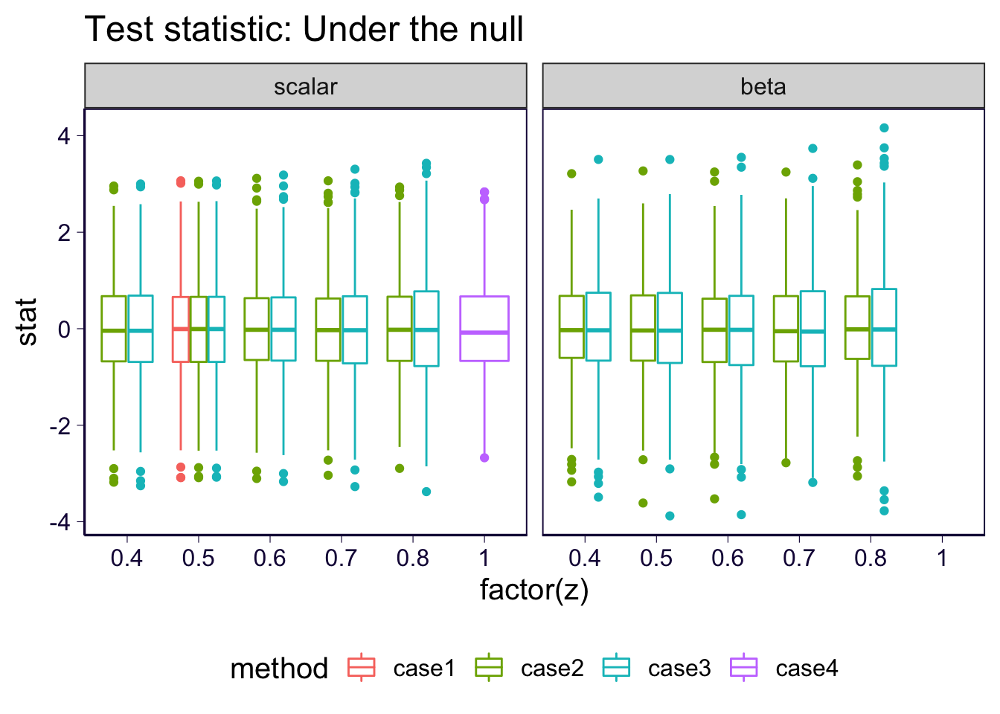
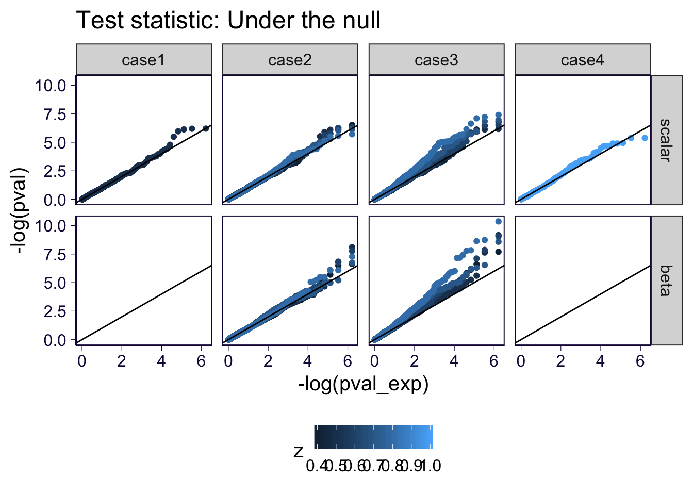

\[ \newcommand{\E}{\text{E}} \newcommand{\sd}{\text{sd}} \]
rm(list = ls())
library(ggplot2)
library(dplyr)
theme_set(theme_bw(base_size=15))
set.seed(2020)
# load some gists
source('https://gist.githubusercontent.com/liangyy/43912b3ecab5d10c89f9d4b2669871c9/raw/3ca651cfa53ffccb8422f432561138a46e93710f/my_ggplot_theme.R')
source('https://gist.githubusercontent.com/liangyy/e580a36154586148cca7fd4cd973f502/raw/bad4364b1700662c7086fcdea191e42f530d0e2e/zval2pval.R')Here we consider the case that we observe child’s genotype \(H^1\) and \(H^2\), and parental phenotype \(y^f\) and \(y^m\). Our goal is to perform GWAS using these informations.
As a reference, I first state the approach taken in (Marioni et al. 2018). Run GWAS:
Then, I introduce the problem setup.
\[\begin{aligned} y^f &= H^f \beta + H^{f,\star} \beta + \epsilon^f \\ y^m &= H^m \beta + H^{m,\star} \beta + \epsilon^m \\ \epsilon &\sim N(0, \sigma^2) \end{aligned}\] where the haplotype that is not transmitted to the child is labeled with \(\star\).
We can further treat \(H^\star\) as random variable when we are looking across many individuals. So, we have \[\begin{aligned} y^f &= H^f \beta + \epsilon_\star^f \\ y^m &= H^m \beta + \epsilon_\star^m \end{aligned}\] where \(\epsilon_\star = \epsilon + H^\star \beta \sim N(0, \sigma^2 + \beta^2 f(1-f))\) (roughly speaking).
In practice, we observe \(H^1, H^2\) and we know that either \(H^1 = H^f, ~H^2 = H^m\) or the other way around. If we have prior belief on which haplotype between \(H^1\) and \(H^2\) is more likely to be \(H^f\), in principle, we can use this piece of information to increase our power.
One way to incorperate this information is to replace \(H^f\) with imputed \(H^f\). By imputation, we can do the following. \[\begin{aligned} \widetilde{H}^f &= \Pr(Z_i = 1 | \text{Data}) H^1 + \Pr(Z_i = 0 | \text{Data}) H^2 \end{aligned}\] where \(Z_i\) is defined as the indicator telling if \(H^1\) is from father (the same definition as in initial idea).
Given \(Z_i\), the problem is reduced to linear regression. So, another approach is to weight the log likelihood of each scenario (\(Z_i = 0, 1\)) with different weights.
So that we’d like to run GWAS in the following manner.
OK, there are some questions remained:
Suppose \(Z_i = 1\), \(H^f = H^1\). We consider the GWAS estimate for \(y^f\) against \(H^1 + H^2\). \[\begin{aligned} \hat\beta &= \frac{(H^1 + H^2)' y^f}{(H^1 + H^2)'(H^1 + H^2)} \\ &= \frac{(H^1 + H^2)' (H^1 \beta + \epsilon^{f, \star})}{2 N f (1 - f)} \\ &= \frac{N f (1-f) \beta + {H^2}' H^1 \beta + (H^1 + H^2)' \epsilon^{f, \star})}{2 N f (1 - f)} \\ &= \frac{1}{2}\beta + \frac{0 \cdot \beta + (H^1 + H^2)' \epsilon^{f, \star}}{2 N f (1 - f)} \\ \end{aligned}\] So, we have \(\E(\hat\beta) = \frac{1}{2} \beta\).
How about the power? The standard deviation is just like a regular GWAS however the estimate is half of a regular GWAS. So, the test statistic is half of a regular GWAS. It suggests power loss and the scale depends on \(\beta\).
Moreover, the previous approach can be re-parameterized by replacing \(H^1 + H^2\) with \(\frac{H^1 + H^2}{2}\). Then \(\E(\hat\beta) = \beta\) and the standard deviation is twice as big as a regular GWAS. From this parameterization, we can start to see that the previous approach is a special case of what we are proposing in approach 1 with \(\Pr(Z = 1 | \text{Data}) = 0.5\).
And moreover, it is equivalent to having \(y^f\) against \(H^1\) and \(y^f\) against \(H^2\) be weighted equally.
There could be something to write down but let’s leave it for the future. In brief, the imputation based approach sounds less valid from my preliminary checking. The weighting based approach looks more reasonable. And interestingly, it is motivated through the EM routine in solving \(\Pr(y^f, y^m, H^1, H^2; \beta, \sigma^2)\). At this point, I don’t see necessity to have EM algorithm come in if there is an easier routine to start with. But we need to keep in mind that the estimate is biased with roughly \(\E(\beta) \approx \Pr(Z = 1)\beta\).
sample_size = 10000
nrepeat = 500
maf_low = 0.05
maf_high = 0.45
heritability = 0.0001
z_seq = 4 : 8 / 10
sd_z = 0.2
beta = 1We consider the following simulation scheme.
Some parameters.
Perform simulation.
source('../code/rlib_simulation.R')
maf = get_maf(nrepeat, maf_low, maf_high)
h_father = sim_hap(sample_size, nrepeat, maf)
h_mother = sim_hap(sample_size, nrepeat, maf)
y_father = simulate_pheno_single_snp(h_father, rep(beta, nrepeat), heritability, maf)
y_mother = simulate_pheno_single_snp(h_mother, rep(beta, nrepeat), heritability, maf)
y_father_null = simulate_pheno_single_snp(h_father, rep(0, nrepeat), heritability, maf, null = TRUE)
y_mother_null = simulate_pheno_single_snp(h_mother, rep(0, nrepeat), heritability, maf, null = TRUE)Run GWAS. Here we consider three regressions.
Some data frame preparation.
source('../code/rlib_gwas.R')
dm0 = list(
X = h_father[[1]] + h_mother[[1]],
y = y_father + y_mother,
ynull = y_father_null + y_mother_null
)
dm1 = function(z) {
list(
X = rbind(
h_father[[1]] * z + h_mother[[1]] * (1 - z),
h_father[[1]] * (1 - z) + h_mother[[1]] * z
),
y = rbind(
y_father,
y_mother
),
ynull = rbind(
y_father_null,
y_mother_null
)
)
}
dm2 = function(z) {
list(
X = rbind(
h_father[[1]],
h_mother[[1]],
h_mother[[1]],
h_father[[1]]
),
y = rbind(
y_father,
y_mother,
y_father,
y_mother
),
ynull = rbind(
y_father_null,
y_mother_null,
y_father_null,
y_mother_null
),
w = rbind(
z,
z,
(1 - z),
(1 - z)
)
)
}
dm3 = list(
X = rbind(
h_father[[1]],
h_mother[[1]]
),
y = rbind(
y_father,
y_mother
),
ynull = rbind(
y_father_null,
y_mother_null
)
)Actual GWAS run.
re = list()
ys = c('y', 'ynull')
types = c('beta = 1', 'beta = 0')
# setting 1
for(i in 1 : length(ys)) {
o = run_gwas_pairwise(dm0$X, dm0[[ys[i]]])
re[[length(re) + 1]] = data.frame(b = o$bhat, b_se = o$bhat_se, method = 'case1', z = 0.5, z_type = 'scalar', type = types[i])
}
# setting 2 & 3
for(z in z_seq) {
message('Working on scaler z = ', z)
zmat = matrix(z, nrow = sample_size, ncol = nrepeat)
# setting 2
dm1_ = dm1(zmat)
for(i in 1 : length(ys)) {
o = run_gwas_pairwise(dm1_$X, dm1_[[ys[i]]])
re[[length(re) + 1]] = data.frame(b = o$bhat, b_se = o$bhat_se, method = 'case2', z = z, z_type = 'scalar', type = types[i])
}
# setting 3
dm2_ = dm2(zmat)
for(i in 1 : length(ys)) {
o = run_gwas_pairwise(dm2_$X, dm2_[[ys[i]]], weights = dm2_$w)
re[[length(re) + 1]] = data.frame(b = o$bhat, b_se = o$bhat_se, method = 'case3', z = z, z_type = 'scalar', type = types[i])
}
message('Working on beta z = ', z)
zmat = matrix(rbeta_from_mean_and_sd(sample_size * nrepeat, mean = z, sd = sd_z), nrow = sample_size, ncol = nrepeat)
# setting 2
dm1_ = dm1(zmat)
for(i in 1 : length(ys)) {
o = run_gwas_pairwise(dm1_$X, dm1_[[ys[i]]])
re[[length(re) + 1]] = data.frame(b = o$bhat, b_se = o$bhat_se, method = 'case2', z = z, z_type = 'beta', type = types[i])
}
# setting 3
dm2_ = dm2(zmat)
for(i in 1 : length(ys)) {
o = run_gwas_pairwise(dm2_$X, dm2_[[ys[i]]], weights = dm2_$w)
re[[length(re) + 1]] = data.frame(b = o$bhat, b_se = o$bhat_se, method = 'case3', z = z, z_type = 'beta', type = types[i])
}
}## Working on scaler z = 0.4## Working on beta z = 0.4## Working on scaler z = 0.5## Working on beta z = 0.5## Working on scaler z = 0.6## Working on beta z = 0.6## Working on scaler z = 0.7## Working on beta z = 0.7## Working on scaler z = 0.8## Working on beta z = 0.8# setting 4
for(i in 1 : length(ys)) {
o = run_gwas_pairwise(dm3$X, dm3[[ys[i]]])
re[[length(re) + 1]] = data.frame(b = o$bhat, b_se = o$bhat_se, method = 'case4', z = 1, z_type = 'scalar', type = types[i])
}
df_re = do.call(rbind, re) %>% mutate(stat = b / b_se)df_re %>% filter(type == 'beta = 1') %>%
ggplot() + geom_boxplot(aes(x = factor(z), color = method, y = stat)) + facet_wrap(~z_type) +
ggtitle('Test statistic: Under the alternative') + th2 +
theme(legend.position = 'bottom')df_re %>% filter(type == 'beta = 0') %>%
ggplot() + geom_boxplot(aes(x = factor(z), color = method, y = stat)) + facet_wrap(~z_type) +
ggtitle('Test statistic: Under the null') + th2 +
theme(legend.position = 'bottom')
df_re = df_re %>% mutate(pval = zval2pval(stat)) # , df = sample_size - 2
df_re = df_re %>% group_by(method, type, z_type, z) %>% mutate(pval_exp = rank(pval) / (n() + 1)) %>% ungroup()
df_re %>% filter(type == 'beta = 0') %>%
ggplot() + geom_point(aes(x = -log(pval_exp), y = -log(pval), color = z)) + facet_grid(z_type~method) +
ggtitle('Test statistic: Under the null') + th2 +
geom_abline(slope = 1, intercept = 0) +
theme(legend.position = 'bottom')
The inflation on “case 3” is explained in this dicussion link. In short, under the null, the weighting scheme results in the under-estimation of error term.
df_re %>% filter(type == 'beta = 1') %>%
ggplot() + geom_boxplot(aes(x = factor(z), color = method, y = b)) + facet_wrap(~z_type) +
ggtitle('Beta hat: Under the alternative') + th2 +
theme(legend.position = 'bottom') +
geom_hline(yintercept = 1)df_re %>% filter(type == 'beta = 0') %>%
ggplot() + geom_boxplot(aes(x = factor(z), color = method, y = b)) + facet_wrap(~z_type) +
ggtitle('Beta hat: Under the null') + th2 +
theme(legend.position = 'bottom') +
geom_hline(yintercept = 0)For case2, \(\E(\beta) = \frac{\gamma}{\gamma^2 + (1 - \gamma)^2}\beta\) if \(\Pr(Z_i = 1) = \gamma,~\forall i\). But notice that in practice, \(\gamma\) should correspond to the probability of imputing the haplotype origin correctly. We can always consider \(\gamma = \max(\Pr(Z), 1 - \Pr(Z))\) as our best proxy. But it definitely has uncertainty especially when we messy \(\Pr(Z)\).
Marioni, Riccardo E, Sarah E Harris, Qian Zhang, Allan F McRae, Saskia P Hagenaars, W David Hill, Gail Davies, et al. 2018. “GWAS on Family History of Alzheimer’s Disease.” Translational Psychiatry 8 (1). Nature Publishing Group: 1–7.